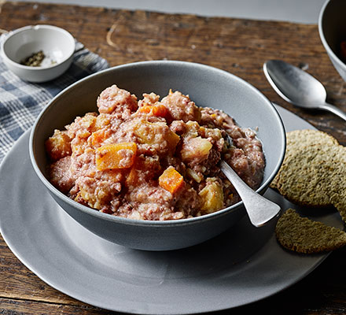

Welcome to Healthy Recipes
We provide a wide range of healthy and delicious recipes to help you maintain a balanced diet and improve your health.
Lunch meals
- Stovies
- Lentil & Bacon Soup
Ingredients: 1 tablespoon vegetable oil 1 large onion, chopped 2 carrots, chopped 2 celery stalks, chopped 1 pound beef stew meat, cut into 1-inch cubes 1 teaspoon salt 1/2 teaspoon black pepper 1/2 teaspoon dried thyme 1/4 teaspoon dried rosemary 1/4 cup all-purpose flour 1 cup beef broth 1 (14.5-ounce) can diced tomatoes, undrained 1 cup pearl barley 1/2 cup water Instructions: Heat the oil in a large pot over medium heat. Add the onion, carrots, and celery and cook until softened, about 5 minutes. Add the beef, salt, pepper, thyme, and rosemary and cook until browned on all sides. Sprinkle the flour over the beef and cook for 1 minute. Gradually whisk in the beef broth and diced tomatoes. Bring to a boil, then reduce heat to low and simmer for 1 hour, or until the beef is tender. Stir in the barley and water and cook for 30 minutes more, or until the barley is cooked through. Serve hot. Stovies is a hearty and filling dish that is perfect for a cold winter day. It is also a great way to use up leftover beef stew meat.
Ingredients: 1 tablespoon olive oil 6 slices bacon, diced 1 large onion, chopped 2 carrots, chopped 2 celery stalks, chopped 2 cloves garlic, minced 1 teaspoon dried thyme 1/2 teaspoon dried rosemary 1/2 teaspoon salt 1/4 teaspoon black pepper 1 cup dried lentils, rinsed and picked over 6 cups chicken or vegetable broth 1 (14.5-ounce) can diced tomatoes, undrained 1/2 cup chopped fresh parsley Instructions: Heat the olive oil in a large pot over medium heat. Add the bacon and cook until crisp. Remove the bacon from the pot with a slotted spoon and set aside. Add the onion, carrots, celery, garlic, thyme, rosemary, salt, and pepper to the pot and cook until softened, about 5 minutes. Add the lentils, broth, and diced tomatoes to the pot. Bring to a boil, then reduce heat to low and simmer for 30 minutes, or until the lentils are soft. Stir in the parsley and reserved bacon and serve.

These are just a few ideas for healthy lunch meals. There are many other possibilities, so get creative and find what you like best!